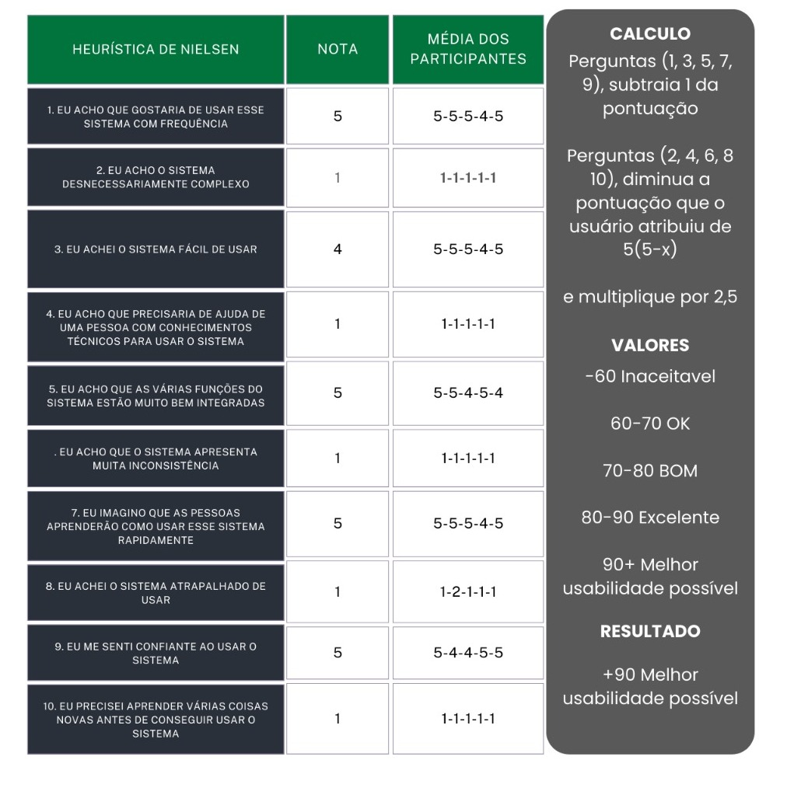
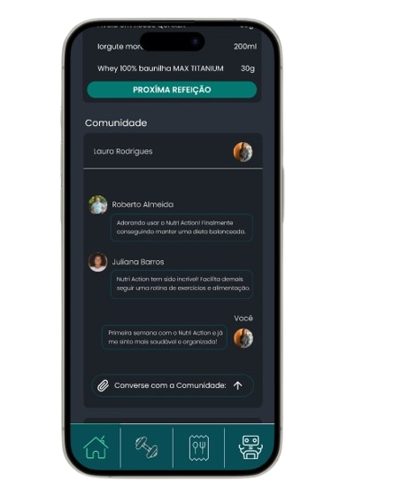
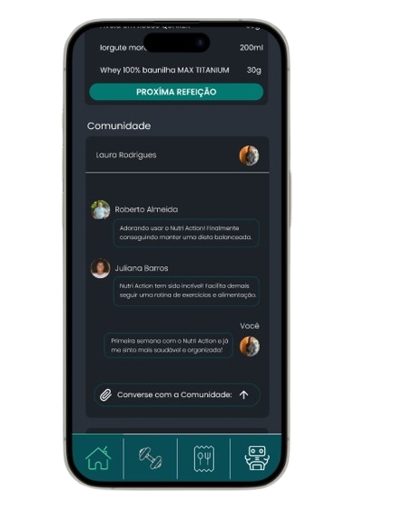

Problema
Manter uma rotina saudável é um desafio comum para muitas pessoas. Este desafio é
ainda mais visto quando se tenta equilibrar a nutrição adequada com a prática de exercícios
físicos regulares. A maioria das pessoas luta para organizar suas atividades diárias e muitas vezes
falham em manter a consistência necessária para atingir seus objetivos de saúde. Este problema
afeta principalmente indivíduos que desejam melhorar sua saúde e bem-estar, mas encontram
dificuldades devido à falta de tempo, conhecimento ou recursos financeiros.
Segundo as pesquisas dos sites LifeHack e FitBiz as principais causas são:
- Falta de Tempo
- Desafios financeiros
- Falta de conhecimento
- Não possuir motivação
Então é isso! Espero que você tenha gostado do nosso artigo com essa curiosidade sobre o sistema Android e seu simpático mascote.
Solução Proposta
O Nutri Action é uma ferramenta integrada, alimentada por inteligência artificial, que leva em consideração as necessidades únicas de cada usuário. Vamos dar uma olhada em como o Nutri Action aborda algumas das principais razões pelas quais as pessoas lutam para manter uma vida fitness:
Falta de motivação: Personalizamos os planos de dieta e exercícios de acordo com as necessidades individuais de cada usuário, oferecendo um direcionamento claro e um acompanhamento personalizado para aumentar a motivação.
Desafios financeiros: Nosso aplicativo oferece uma alternativa acessível, fornecendo planos de exercícios e dieta personalizados e integrados com IA, eliminando a necessidade de contratar personal trainers caros.
Falta de consistência: Com uma interface intuitiva e alertas para acompanhar a rotina diária, garantimos que os usuários mantenham a consistência na prática de exercícios e na alimentação saudável.
Preocupações com a saúde: Adaptamos os planos de exercícios e dieta às condições de saúde específicas de cada usuário, fornecendo orientações seguras e adequadas.
Falta de conhecimento: Através do acompanhamento com a IA, você sera capaz não apenas de tirar dúvidas sobre qualquer coisa relacionada ao fitness, mas a oportunidade de ver tutoriais de exercicios dentro do app
Adaptação ao estilo de vida: Nosso aplicativo oferece opções personalizadas de exercícios e dieta, adaptando-se ao ambiente e ao estilo de vida específicos de cada usuário, fornecendo orientações práticas e realizáveis
Estudo de usuario
Personas
.jpeg)
.jpeg)

Mapa de Empatia
.jpeg)
.jpeg)
.jpeg)
Storytelling
Juliana Barros
Todo dia…
Juliana tentava equilibrar sua carreira agitada com sua vida pessoal, mas encontrava
dificuldades para planejar e preparar refeições saudáveis e manter uma rotina de
exercícios regular. Ela queria melhorar seu desempenho nas atividades físicas,
especialmente musculação, mas o tempo parecia sempre insuficiente
Um dia…
Juliana encontrou um novo aplicativo que prometia facilitar o planejamento de
refeições e treinos adaptados às suas necessidades individuais. Ela decidiu
experimentar, esperando que isso pudesse ajudá-la a gerenciar melhor seu tempo e
alcançar seus objetivos de fitness
Por causa disso…
Juliana começou a usar o aplicativo para planejar suas refeições e sessões de treino
de maneira mais eficiente. A interface amigável do aplicativo permitiu que ela
ajustasse seus planos alimentares e de treino de forma rápida com base nos
resultados e rotina pessoal.
E por causa disso…
Juliana conseguiu manter uma dieta e treino equilibrada e personalizada com sua
rotina de trabalho o que a ajudou a sustentar um estilo de vida saudável o que
otimizou seus resultados pessoais e a motivou a continuar se esforçando
Até que finalmente…
Juliana conseguiu encontrar um equilíbrio entre suas responsabilidades profissionais
e pessoais, mantendo sua saúde e bem-estar em dia. O aplicativo se tornou uma
ferramenta indispensável para ela, ajudando-a a alcançar seus objetivos de fitness e
a manter-se motivada e organizada
Roberto Almeida
Todo dia…
Roberto tentava melhorar sua qualidade de vida e aumentar sua longevidade, mas se
sentia desmotivado e perdido com tantas informações conflitantes sobre nutrição e
exercício físico, além de não ser um expert em tecnologia. Ele queria perder peso de
forma saudável e encontrar uma rotina de exercícios adequada para sua idade, mas
não sabia por onde começar.
Um dia…
Roberto descobriu um aplicativo chamado Nutri Action, que prometia ajudar pessoas
como ele a adotarem novos hábitos alimentares e de exercício de forma sustentável.
Ele decidiu dar uma chance e começou a usar o aplicativo para planejar suas
refeições e treinos.
Por causa disso…
Roberto começou a receber planos de nutrição personalizados que levam em conta
suas condições de saúde e preferências alimentares. Ele também encontrou
exercícios de baixo impacto que eram seguros e eficazes para sua condição física,
ajudando-o a perder peso sem causar lesões
E por causa disso…
Roberto começou a sentir uma melhoria em sua energia e disposição para participar
ativamente em atividades diárias e hobbies. Ele se sentia mais motivado e confiante
para continuar sua jornada de saúde
Até que finalmente…
Com o apoio do Nutri Action e sua própria determinação, Roberto conseguiu perder
peso de forma saudável e reduzir os riscos à sua saúde. Ele encontrou um equilíbrio
entre nutrição e exercício que funcionava para ele e se sentia mais feliz e saudável
do que nunca
Laura Rodrigues
Todo dia…
Laura Rodrigues, uma dedicada estudante de Medicina na Universidade Federal do
Rio de Janeiro, enfrentava uma rotina intensa e exaustiva. Dividia seu tempo entre
aulas, estágios clínicos e pesquisas científicas, mas tinha dificuldade em equilibrar os
estudos com sua vida pessoal e manter uma alimentação saudável.
Um dia…
Laura descobriu um aplicativo que prometia facilitar o planejamento de refeições
saudáveis e rápidas. Decidiu experimentar o aplicativo, esperando que isso pudesse
ajudá-la a gerenciar melhor seu tempo e a manter uma alimentação adequada para
sustentar sua rotina intensa.
Por causa disso…
Laura começou a usar o aplicativo para planejar suas refeições de maneira eficiente.
A interface amigável e as opções personalizadas do aplicativo permitiram que ela
encontrasse receitas rápidas e nutritivas que se encaixavam perfeitamente em sua
rotina corrida. Ela também recebeu dicas de organização de cronograma que a
ajudaram a otimizar seu tempo de estudo e lazer.
E por causa disso…
Laura conseguiu integrar refeições saudáveis em sua rotina diária, o que melhorou
significativamente sua saúde e bem-estar. Com mais energia e foco, ela se sentiu
mais motivada e produtiva em seus estudos e estágios. Além disso, ela conseguiu
encontrar tempo para atividades de autocuidado e lazer, equilibrando melhor sua vida
acadêmica e pessoal.
Até que finalmente…
Laura alcançou um equilíbrio saudável entre suas responsabilidades acadêmicas e
sua vida pessoal. Ela se destacou nos estudos, se preparando eficazmente para os
exames de residência, e manteve sua saúde em dia. O aplicativo se tornou uma
ferramenta indispensável para ela, ajudando-a a organizar sua rotina e a manter-se
motivada e saudável
Modelo Conceitual de Design
.png)
Guia de estilo

Jornada de Usuario
Teste
Metodologia
A lista de verificação de usabilidade do projeto de interface com o usuário ulizamos a Heurística de Nielsen. Usamos alguns dos nossos protótipo de baixa fidelidade para os usuário interagirem com o ambiente. Utilizamos 5 pessoas do nosso circulo de amizade, alguns praticam uma vida fitness e outros não. Pedimos para que eles realizassem algumas atividades no nosso projeto como: 1. Crie uma conta; 2. Veja um vídeo de exercício; 3. Monte um carrinho de compras; 4. Tirar alguma dúvida com o bot; 5. Alterar o treino; 6. Alterar a dieta; No final, eles avaliaram e fizemos a média de pontuação deles. (4,6 >= 5 || 4,6 < 4
Prototipo de alta qualidade

 
